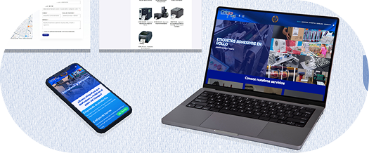
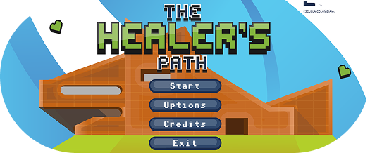
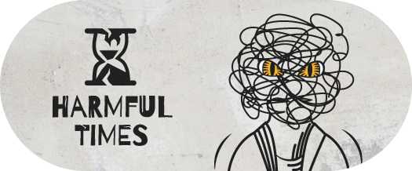
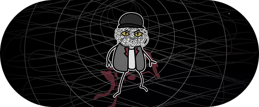
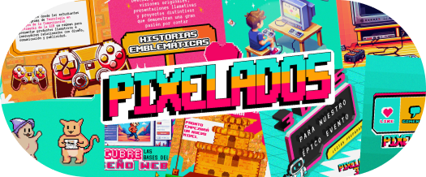
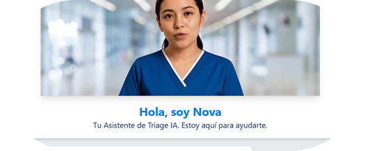
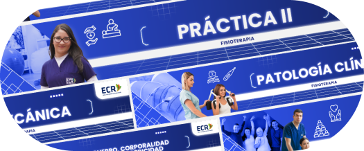

PORTAFOLIO
Revisa la red de proyectos más importantes que he construido a lo largo de estos últimos años.
Revisa la red de proyectos más importantes que he construido a lo largo de estos últimos años.
Página que ofrece servicios de flexografía e impresión de etiquetas liderada por expertos con más de 20 años de experiencia. Me encargué de planificar, organizar y diseñar gran parte del contenido que aparece en el sitio web, incorporando aprendizajes en gestión de páginas web con el CMS WordPress y la herramienta de maquetación Elementor.


Prototipo de videojuego y estrategia de gamificación para estudiantes de carreras de fisioterapia, fonoaudiología y terapia ocupacional de la Escuela Colombiana de Rehabilitación. Contribuí con la recolección de información, planificación, liderazgo y diseño de la Interfaz de Usuario (UI) para estilizar botones e interacciones.
Proyecto transmedial que explora la relación entre Samuel y la sombra (Lucian) que lo atosiga emocionalmente, abordando temas de salud mental, depresión y un trasfondo trágico a nivel familiar. Se realizó un esfuerzo en conjunto para consolidar identidad visual, contenido para redes sociales, página web, podcast y un teaser de la trama principal y sus personajes. Participé en la conformación del aspecto visual para campañas digitales, además de apoyar la planificación, grabación y edición del tráiler.


Corta animación de tres minutos desarrollada con los programas de edición Premiere Pro y After Effects, que representa un punto de inflexión de la narrativa transmedial Harmful Times. La creación visual de este fragmento fue totalmente propia, mientras se utilizaron recursos externos para desarrollar el apartado sonoro.
Presentación de proyectos integrados que representa a todos los estudiantes de la carrera de Gestión de la Comunicación Multimedia, frente a toda la comunidad universitaria de la ECR. Participé en las primeras dos ediciones por medio de la elaboración de publicaciones estáticas, reels y motion graphics, lo cual me permitió obtener habilidades de diseño y creación de contenido.


Propuesta de plataforma virtual liderada por estudiantes de administración en salud. Ayudé a la materialización del prototipo inicial, utilizando Google Firebase para modelar una aplicación que agilice procesos de Triage y atención de pacientes en centros de urgencias.
Por medio de mis prácticas profesionales en la Escuela Colombiana de Rehabilitación, renové parte de las aulas virtuales: proponiendo, diseñando y configurando banners de presentación en la plataforma virtual Moodle. Esto ayudó a consolidar mis conocimientos en Adobe Photoshop e Illustrator.
